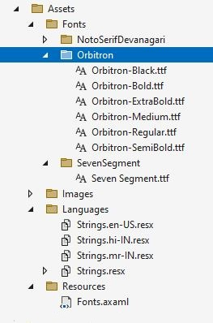

- Add a folder Assets
- Add another empty folder Fonts
- Add all the fonts in Fonts folders.
- 
- Add Resources folder inside Assets folder.
- Add Fonts.axaml ResourceDictionary in Fonts folder
-
Add all required fonts in the dictionary file.
<ResourceDictionary xmlns="https://github.com/avaloniaui" xmlns:x="http://schemas.microsoft.com/winfx/2006/xaml">
<FontFamily x:Key="noto_devnagari">avares://UI/Assets/Fonts/NotoSerifDevanagari#Noto Serif Devanagari</FontFamily>
<FontFamily x:Key="seven_segment">avares://UI/Assets/Fonts/SevenSegment#Seven Segment</FontFamily>
<FontFamily x:Key="orbitron">avares://UI/Assets/Fonts/Orbitron#Orbitron</FontFamily>
</ResourceDictionary>
-
Include this dictionary in App.axaml
<Application.Resources>
<ResourceDictionary>
<ResourceDictionary.MergedDictionaries>
<ResourceInclude Source="/Assets/Resources/Fonts.axaml">
</ResourceInclude>
</ResourceDictionary.MergedDictionaries>
</ResourceDictionary>
</Application.Resources>
-
Now, we can use the font-family as static resource in views
<StackPanel Margin="10">
<TextBlock FontFamily="{StaticResource noto_devnagari}" Text="{x:Static langstring:Strings.greeting}">
</TextBlock>
<TextBlock
FontFamily="{StaticResource noto_devnagari}"
Foreground="Red"
Text="धर्मक्षेत्रे कुरुक्षेत्रे समवेता युयुत्सवः। मामकाः पाण्डवाश्चैव किमकुर्वत सञ्जय।।">
</TextBlock>
<TextBlock
FontFamily="{StaticResource orbitron}"
FontSize="20"
FontWeight="Bold"
Text="jai shree ram jai mahakal">
</TextBlock>
<TextBlock
FontFamily="{StaticResource seven_segment}"
FontSize="40"
Text="97687686868">
</TextBlock>
</StackPanel>